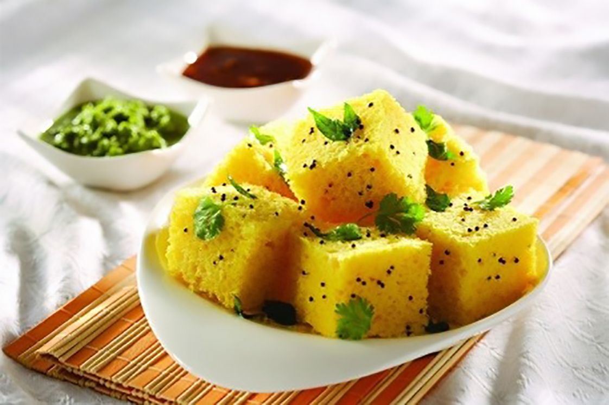

જલ્દી થી બની જતી ખમણ બનાવવાની રીત,ખમણ ની રેસીપી શીખીએ
|
ખમણ બનાવવાની રીત
|
- ખીરું બનાવવા માટે સામગ્રી:
- ૧ કપ ચણાની દાળ
- ૧ ટીસ્પૂન લીંબુનો રસ
- ૨ ટેબલસ્પૂન ખાટુ દહીં
- ૧ ટેબલસ્પૂન લીલા મરચાં-આદુંની પેસ્ટ
- ૧ ટીસ્પૂન ઇનો ફ્રૂટ સોલ્ટ (અથવા ૧/૩ ટીસ્પૂન બેકિંગ સોડા)
- ૧/૮ ટીસ્પૂન હળદર
- ૧ ટીસ્પૂન તેલ
- ૧ કપ પાણી
- નમક/મીઠું, સ્વાદ અનુસાર
- વઘાર માટે સામગ્રી:
- ૧ ટેબલસ્પૂન તેલ
- ૧ ચપટી હીંગ
- ૧/૨ ટીસ્પૂન રાઈ
- ૪-૫ લીલા મરચાં, કાપેલા
- ૨ ટેબલસ્પૂન બારીક સમારેલા લીલા ધાણા
|
 |
Instructions
બનાવવાની રીત:
- ચણાની દાળને પાણીથી ધોઈ લો અને ૬ કલાક માટે પાણીમાં પલાળી દો.
- દાળમાંથી વધારાનું પાણી નિતારી (કાઢી) નાખોં અને તેને મિક્સરના મોટા જારમાં નાખોં. તેને દરદરૂ (મોટું મોટું) પીસી લો. તેમાં ૧ કપ પાણી નાખોં (અથવા થોડું ઓછું અથવા વધારે, જરૂર પ્રમાણે) અને ફરીથી પીસી લો.
- તેને એક મોટા બાઉલમાં કાઢો. તેમાં લીંબુનો રસ, ખાટુ દહીં અને મીઠું નાખોં અને મિક્ષ કરો. તેને એક થાળીથી ઢાંકીને ૫-૬ કલાક માટે કોઈ થોડી ગરમ જગ્યાએ ફરમેંટ (આથો લાવવા) કરવા માટે મૂકો. ત્યારબાદ તેમાં લીલા મરચાં-આદુંની પેસ્ટ નાખોં અને બરાબર મિક્ષ કરો.
- ઢોકળા પક્વવાની થાળીને તેલ લગાવીને ચીકણી કરી લો. એક ઊંડા વાસણમાં અથવા ઢોકળીયામાં (ઢોકળા પક્વવાનું વાસણ) ૨-૩ ગ્લાસ પાણી નાખોં અને તેને મધ્યમ આંચ પર ગરમ કરવા મૂકો. ખીરામાં ઇનો ફ્રૂટ સોલ્ટ નાખોં અને એક મિનિટ માટે બરાબર મિક્ષ કરો.
- તમને દેખાશે કે ખીરું લગભગ ફૂલીને બેગણું થઈ ગયું છે.
- તરત જ ખીરાને તેલ લગાવેલી થાળીમાં નાખોં (થાળીની ઊંચાઈથી અડધા સુધી) અને તેને ઢોકળીયા માં મૂકો.
- સ્ટીમરને ઢાંકી દો અને તેને મધ્યમ આંચ પર ૧૦-૧૫ મિનિટ માટે આ વરાળથી પકાવો.
- ૧૦-૧૫ મિનિટ પછી, ઢોકળીયાનું ઢાંકણ હટાવી દો અને ઢોકળાની વચ્ચે એક ચાકુ અથવા ટૂથપિક નાખોં. જો તે સાફ બહાર આવે છે તો ઢોકળા ચડી ગયા છે નહીતર તેને વધારે ૨-૩ મિનિટ સુધી ચડવા દો.
- ઢોકળીયામાંથી થાળી બહાર કાઢો અને થોડી મિનિટ માટે ઠંડી થવા દો. ઢોકળાને નાના નાના ટુકડાઓમાં કાપી લો.
- એક નાની કડાઈમાં ૧ ટેબલસ્પૂન તેલ ગરમ કરો. તેમાં રાઈ અને હીંગ નાખોં. જ્યારે રાઈ ફૂટવા લાગે ત્યારે તેમાં લીલા મરચાં નાખોં અને થોડી સેકંડ માટે સાંતળો. ગેસને બંધ કરી દો અને વઘારને ઢોકળા ઉપર નાખોં.
- તેને કાપેલા લીલા ધાણાથી સજાવો અને લીલા ધાણાની ચટણી સાથે પીરસો.
|
 ગુજરાતી રેસીપી
ગુજરાતી રેસીપી